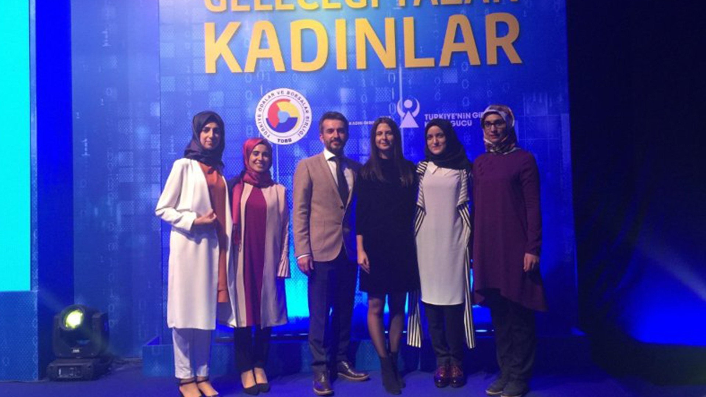
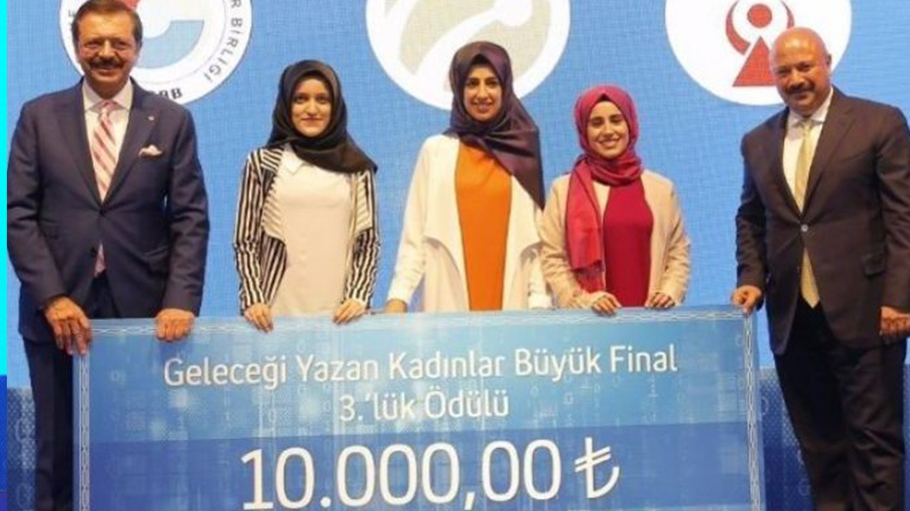

<div id="portfolio-page" class="portfolio-page-content">
    <div class="container">
        <div class="portfolio-nav">
            <div id="portfolio-close-button" class="portfolio-close-button">
                <a href="#portfolio"><i class="fa fa-close"></i></a>
            </div>
        </div>

        <div class="portfolio-title">
            <h1>Geleceği Yazan Kadınlar Projesi Üçüncülük Ödülü</h1>
        </div>

        <div class="row">
            <div class="col-sm-12 col-md-7 portfolio-block">
                <div class="owl-carousel portfolio-page-carousel">
                    <div class="item">
                        
                    </div>
                    <div class="item">
                        
                    </div>
                    <div class="item">
                        
                    </div>
                </div>

         <!--       <div class="portfolio-page-video embed-responsive embed-responsive-16by9">
                  <iframe class="embed-responsive-item" src="https://player.vimeo.com/video/241094644"></iframe>
                </div> -->

                <!--
                <div class="portfolio-page-image">
                    
                </div>
                -->

                <script type="text/javascript">
                    jQuery(document).ready(function($){
                        $('.portfolio-page-carousel').owlCarousel({
                            smartSpeed:1200,
                            items: 1,
                            loop: true,
                            dots: true,
                            nav: true,
                            navText: false,
                            margin: 10
                        });
                    }); 
                </script>
            </div>

            <div class="col-sm-12 col-md-5 portfolio-block">
                <!-- Project Description -->
                <div class="block-title">
                    <h3>Karabük Yubiva Projesi ile Geleceği Yazan Kadınlar Projesinde 3. Olmayı Başardı</h3>
                </div>


                <p class="text-justify">TURKCELL, TOBB ve TOBB Kadın Girişimler Kurulu işbirliğinde gerçekleştirilen Geleceği Yazan Kadınlar projesinin 6 aylık maratonunda 200+ proje arasında önce ilk 48'e kalıp yarı finale 2 ekibim ile katıldık. Yarı finalde 48 proje arasında ilk 10 projeye kalıp, iş fikri ve gelir modeliyle finalde içlerinde Ali Sabancı, Kaan Terzioğlu, Rifat Hisarcıklıoğlu ve Evrim Aras'ında bulunduğu 9 jüri üyesi tarafından değerlendirilen projelerden, teknik danışmanlığını yaptığım Artırılmış Gerçeklik ile İşaret Dili Uygulaması "Yubiva" projesi 3. seçilmiştir. Fikri geliştirme aşamasında yardımlarını esirgemeyen mentorlerimize ve bu projede emeği geçen TURKCELL, TOBB ve TOBB Kadın Girişimler Kurulu çalışanlarına sonsuz teşekkürler.</p>
                <!-- /Project Description -->

                <!-- Technology -->

                <!-- /Share Buttons -->
            </div>
        </div>
    </div>
</div>
